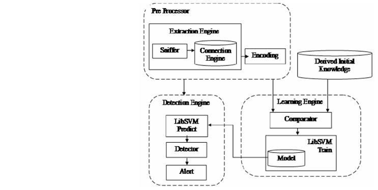
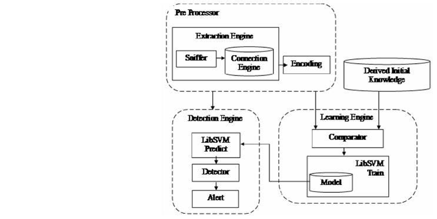

← Back to Projects
 

Intelligent Network Intrusion Detecion System (NIDS)
The paper based on this work was published in the International Conference on Emerging Trends in Electrical,
Communication and Information Technologies (ICECIT 2012) proceedings journal ICECIT Vol. 1 - Elsevier Science and Technology. The archive of the paper can be found here.
There has been immense development in the field of intrusion detection, however most of it has been concentrated
towards signature based intrusion detection systems. These signature based systems can handle only the
known attacks. When it comes to new attacks these systems tend to fail due to their inherent limitations. With the rapidly changing face of the attacks we need systems which learn from these changes quickly and hence efficiently detect new attacks. The alternative is a anomaly based system which is the potential answer to this problem. Anomaly based systems can
be efficiently used to detect novel attacks. In this project we seek to illustrate the implementation of an anomaly based
system. In this implementation, the network traffic is mined for statistical data and is then fed to a statistical
machine learning algorithm, Support Vector Machines.
- Machine Learning/ Classification
- Data Mining and Modelling
- Packet capture and analysis
- Optimized Reduce false positive